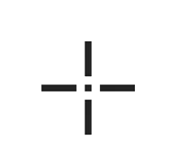

<ons-page>
    
    <ons-toolbar>
    <div class="left">
        
        <ons-toolbar-button id='side-menu-button' onclick="fn.openMenu()"> 
        <ons-icon icon="md-menu"></ons-icon>
        </ons-toolbar-button>
        
    </div>
    <div class="center">
        Карта
    </div>

    <div class="right">
        <ons-toolbar-button id="layers-button">
            <ons-icon icon="md-layers"></ons-icon>
        </ons-toolbar-button>
    </div>
    </ons-toolbar>

    
    <div id="map-container"></div>

    <div id="downbar-wrapper">
        <ons-button modifier="quiet" onclick="carousel_prev()"><ons-icon icon="md-arrow-left" class="button-icon"></ons-icon></ons-button>
        <ons-carousel overscrollable auto-scroll direction="horizontal" item-width="80px" swipeable id="draw-bar"></ons-carousel>
        <ons-button modifier="quiet" onclick="carousel_next()"><ons-icon icon="md-arrow-right" class="button-icon"></ons-icon></ons-button>
    </div>

    <ons-carousel overscrollable auto-scroll direction="horizontal" item-width="33%" swipeable id="draw-instrument-bar" class="downbar">
        <ons-carousel-item>
            <ons-button modifier="quiet" class="carousel-item-content" id="instrument-draw-center" onclick="drawInstrumentCenter()">
                <p class="carousel-button-text">Центр карты</p>
            </ons-button>
        </ons-carousel-item>
        <ons-carousel-item>
            <ons-button modifier="quiet" class="carousel-item-content" id="intrument-draw-gps" onclick="drawInstrumentGPS()">
                <p class="carousel-button-text">Местонахождение устройства</p>
            </ons-button>
        </ons-carousel-item>
        <ons-carousel-item>
            <ons-button modifier="quiet" class="carousel-item-content" id="instrument-draw-coordinate" onclick="showDrawInstrumentDialog()">
                <p class="carousel-button-text">Координаты</p>
            </ons-button>
        </ons-carousel-item>
    </ons-carousel>

    <template id="carousel-item">
        <ons-carousel-item>
            <ons-button class="carousel-item-content" modifier="quiet">
            </ons-button>
          </ons-carousel-item>
    </template>

    <template id="dialog_features">
        <ons-dialog id="dialog-features">
                <ons-toolbar class="dialog-toolbar">
                    <div class="center dialog-toolbar-content">
                        Выбранные элементы
                    </div>
                    <div class="right">
                        <ons-toolbar-button onclick="hideDialog('dialog-features')">
                            <ons-icon icon="md-close" class="dialog-close"></ons-icon>
                        </ons-toolbar-button>
                    </div>
                </ons-toolbar>
                <div > 
                <ons-list id="dialog-features-content">
                </ons-list>
                </div>
        </ons-dialog>
    </template>

    <template id="dialog_draw_instrument_coordinate">
        <ons-dialog id="dialog-draw-instrument-coordinate">
                <ons-toolbar class="dialog-toolbar">
                    <div class="center dialog-toolbar-content">
                        Координаты
                    </div>
                    <div class="right">
                        <ons-toolbar-button onclick="hideDialog('dialog-draw-instrument-coordinate')">
                            <ons-icon icon="md-close" class="dialog-close"></ons-icon>
                        </ons-toolbar-button>
                    </div>
                </ons-toolbar>
                <div class="dialog-draw-instrument-coordinate-content">
                    <p>Введите координаты:</p>
                    <div class="dialog-draw-instrument-coordinate-block">
                        <div class="coordinate-block">
                            <span class="coordinate-label">Долгота:</span>
                            <ons-input id="Y-value" class="coordinate-input" modifier="underbar" type="number" float value="0"></ons-input>
                        </div>
                        <div class="coordinate-block">
                            <span class="coordinate-label">Широта:</span>
                            <ons-input id="X-value" class="coordinate-input" modifier="underbar" type="number" float value="0"></ons-input>
                        </div>
                    </div>
                    <ons-button modifier="quiet" onclick="drawInstrumentCoordinate()" style="float:right;">Установить</ons-button>
                    <ons-button modifier="quiet" onclick="hideDialog('dialog-draw-instrument-coordinate')" style="float:right;">Отмена</ons-button>
                </div>
        </ons-dialog>
    </template>

    <script>
    ons.getScriptPage().onInit = function() {
        showMap()
        createDrawBar()

        this.querySelector('#layers-button').onclick = function() {
            document.querySelector('#myNavigator').pushPage('./views/layers.html');
        };

        this.onShow = function() { 
            transformUIToOrientation();
            map.updateSize();
        };
    };
    </script>
</ons-page>